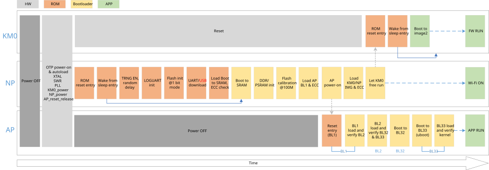

Features
On-chip boot ROM
Contains the bootloader with In-System Programming (ISP) facility
Secure boot process with multiple cryptographic algorithms of hardware or software engine
Suspend resume process
Boot from NAND or NOR flash
PSRAM or DDR as memory
Boot Address
After reset, CPU will boot from the vector table start address, which is fixed by hardware. KM0, KM4 (NP) and CA32 (AP) all boot from address 0x0000_0000, as Table 1-1 lists.
Table 1-1 Boot address
CPU |
Address |
Type |
|---|---|---|
KM0 |
0x0000_0000 |
KM0 ITCM ROM |
KM4 |
0x0000_0000 |
KM4 ITCM ROM |
CA32 |
0x0000_0000 |
CA32 BUS ROM |
Pin Description
The parts support ISP via LOGUART (PB23 & PB24) and USB. The ISP mode, given in Table 1-2, is determined by the state of the pin PB24 at boot time.
Table 1-2 ISP mode
Boot Mode |
PB24 (UART_DOWNLOAD) |
Description |
|---|---|---|
No ISP |
HIGH |
ISP bypassed. Part attempts to boot from Flash. |
ISP |
LOW |
Part enters ISP via LOGUART or USB. |
Boot Flow
The boot flow of RTL8730E is illustrated in Figure 1-1. After a power-up or hardware reset, hardware will boot KM4 at clock 200MHz. The boot process is handled by the on-chip boot ROM and is always executed by the KM4 core. After the KM4 bootloader code, the KM4 will set up the environment for the KM0 and CA32.
KM4 boots ROM
KM4 secure boot (optional)
KM4 boots to SRAM
KM4 helps KM0 load images and check the signature (optional)
KM4 helps CA32 load BL1 image and check the signature, then CA32 loads image and checks signature itself (optional)
{kind=link}

Figure 1-1 Boot flow
The bootloader controls initial operation after reset or power on and also provides the means to program the flash memory. This could be initial programming of a blank device, erasure and re-programming of a previously programmed device.
Assuming that power supply pins are at their nominal levels when the rising edge on RESET pin is generated, then boot pins are sampled and the decision of whether to continue with user code or ISP handler is made. If the boot pins are sampled LOW, the external hardware request to start the ISP command handler is ignored. If there is no request for the ISP command handler execution, a search is made for a valid user program. If a valid user program is found, then the execution control is transferred to it. If a valid user program is not found, the dead loop is invoked.
Whether boot from NOR or NAND flash depends on settings in OTP. Also, PSRAM or DDR can be selected to store code and data.